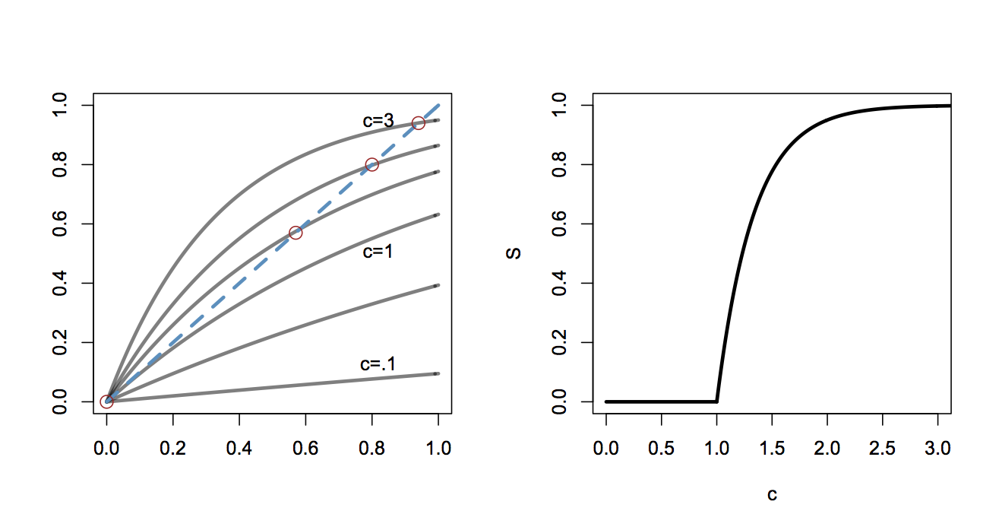

Criticality in Protein Aggregation: A Graph Theoretic Aproach
Proteins are the fundamental unit of computation and signal processing in biological systems. Unfortunately, when proteins malfunction, biological systems tend to grind to a halt. Take for instance, the unnatural aggregation of proteins, which is reponsible for many neurodegenerative diseases including Alzheimer's disease and Huntington's disease. It is commonly observed that protein aggregates tend to form suddenly and nonlinearly, in response to some experimental perturbation. Here I desribe a simple staistical model to describe phase transitions and critical phenomena in protein aggregation processes. This model intentionally ignores all the relevant biophysics, and instead aims to capture the statistcal features of such processes using the theory of random graphs put forth by Erdos and Renyi.
Graph Theory Preliminaries
A graph is a collection of nodes connected by edges. The degree of a particular node is the total number of the edges connected to it. An adjacency matrix \({\bf A}_{i,j}\) tabulates whether nodes \(i\) and \(j\) are connected by an edge. The degree of the \(i^{th}\) node can be easily calculated from the adjacency matrix, \(k_i= \sum_j {\bf A}_{i,j}\). The degree distribution of a graph summarizes the graph in a natural way. The fraction of nodes which are of degree \(k\) is denoted \(p_k\). As an example, if I find an edge at random and follow to the nearest node, the probability of arriving at a node of degree \(k\) is \(p_k n \frac{k}{\sum_i k_i}\). A clique, or connected component, is a set of nodes which are all connected by edges. For every node in a clique, one can reach every other node in that clique by traveling along edges. The giant component is the largest such clique in a graph.
Model
We suppose that a finite number, n, of proteins exist in close proximity, yet are of such low concentration that they do not appreciably interact. Further, we model the interaction of two proteins as being attractive and binary. That is, we ignore the physically realistic electrostatic forces between proteins and simply keep track of whether a pair of proteins interact or not. If a pair of proteins interact, then we assume attractive forces between them and say that they form an aggregate (or clique) of size two. Any two proteins will interact with probability \(p\), and all interactions are identical and independent.
With these simplifications, we model the collection of proteins as a graph with n nodes. In dilute solution, the n proteins do not interact, the graph has no edges and the degree distribution of the network is a delta function at \(k=0\). By increasing the concentration of the proteins (by any experimental method), one increases the probability that any two proteins may interact attractively. With this model, the act of increasing protein concentration is analogous to adding edges, at random, to the nodes of the network. With probability \(p\), each possible edge between nodes \(i\) and \(j\) is formed and the expected number of interactions is \(\binom{n}{2}p\). Let \(c\) be the average degree of the whole network, \(c=\langle k \rangle = (n-1)p\), thus the interaction probability is \(p=\frac{c}{n-1}\). By increasing the protein concentration, we are increasing \(c\) and thus \(p\), the probability of two proteins interacting.
We can derive an expression for the degree distribution of this random graph. The probability of any two nodes having an edge is \(p\), and the probability of any node having \(k\) edges is proportional to \(p^k\). Following this reasoning, it easy to see that the node edges will be binomially distributed,
\[ p_k = \binom{n-1}{k} p^k (1-p)^{n-k}. \]
If the size of the network is large, we can apply Poisson's approximation to binomial distributions,
\[ \frac{(n-1)!}{((n-1)-k)! k!} \approx \frac{(n-1)^k}{k!}\\ p_k \approx \frac{(n-1)^k}{k!} \frac{c^k}{(n-1)^k} (1 - \frac{c}{n-1})^{(n-1)}\\ = \frac{c^k}{k!}e^{-c} . \]
Thus, the degree distribution of this random graph is Poisson. When the interaction probability (and c) is low, then most of the mass of the distribution is concentrated around low \(k\) and a very small fraction of the network has high degree. As the interaction probability increases, this degree distribution shifts and most of the mass is concentrated at high \(k\) with a vanishing fraction of the network having \(k=0\) or \(k=1\). By increasing the protein concentration, the interaction probability is increased, and the degree distribution shifts toward more proteins having many interactions.
As proteins form aggregates at random, we want to track the fraction of the graph that is a member of an aggregate of a particular size. If \(p=0\) then all proteins are non-interacting and there are \(n\) aggregates of size \(1\). Conversely, if \(p=1\) then all proteins are connected and there is one aggregate of size \(n\). Call \(S\) the fraction of the network which is in the largest aggregate (the giant component of the graph).
\[ u=1-S = (1-p + pu)^{(n-1)} = (1 + p(u-1))^{(n-1)} = \left( 1 + \frac{c(u-1)}{n-1} \right)^{(n-1)} \]
As \( n \to \infty \), \[ u= e^{c(u-1)}\\ S = 1- e^{cS}. \]
This transcendental equation describes the size of the largest aggregate as a function of interaction probability. Solutions to this equation are shown in the figure below on the left. The intersections of the curves (highlighted with red circles) describe the size of the giant componenet for each value of \(c\). Note that for small values of \(c\), solutions are tangent only at \(S=0\) and thus no giant component is formed. The relationship between giant component size and interaction probability is shown on the right.

The figure shows (Right) shows that for low values of \(c\) (low interaction probability), there is no significant large aggregate. When interaction probability is low, any aggregates that form are small and tend not to combine. At \(c=1\), a phase transition is seen, and for \(c>1\) it will be the case that a significant fraction of all the proteins will aggregate. Obviously, this relationship saturates for very large \(c\) since eventually every available protein is a member of the largest aggregate.
By increasing protein concentration, one increases the probability that two proteins might interact favorably. At low concentrations, interactions are sufficiently rare that aggregates remain small and unconnected to each other. At a certain critical concentration, these interactions become significant and larger clusters of interacting proteins (aggregates) will form. Increasing the concentration further serves to connect the remaining proteins to the aggregate. From this statistical analysis, the thresholding behavior commonly observed in protein aggregation experiments can be easily understood from the probability of large populations of proteins interacting.